Cliente Pessoa Física
Hidromassagem e aquecimento.
Obra finalizadaConheça uma seleção das obras concluídas e dos projetos em andamento, com informações do portfólio oficial da Stagnum.
Filtre por situação ou busque pelo nome, bairro e serviço.
Hidromassagem e aquecimento.
Obra finalizadaFiltração, iluminação e hidromassagem.
Obra finalizadaFiltração, aquecimento, iluminação e salinização.
Obra finalizadaSistema de filtração.
Obra finalizadaImpermeabilização de caixa d’água.
LCM ParticipaçõesIluminação das piscinas.
Obra finalizadaImpermeabilização, deck e filtração.
LCM ParticipaçõesIluminação dos espelhos d’água.
Obra finalizadaSistema de aquecimento e capa térmica das piscinas.
Obra finalizadaSistema de filtração e antipânico das piscinas.
RJZ CyrelaSistema de filtração e antipânico da piscina.
RJZ CyrelaSistema de filtração e antipânico das piscinas.
PetrinaMadeiramento de sauna seca.
Obra finalizadaManutenção preventiva em quadro de força.
Obra finalizadaSistema de iluminação das piscinas.
Obra finalizadaSistema de filtração, iluminação e climatização da piscina.
Obra finalizadaSistema de iluminação da piscina.
Obra finalizadaClimatização da piscina.
Obra finalizadaPiscina do empreendimento.
Obra finalizadaRevestimento da piscina em vinil.
Obra finalizadaFiltração e climatização das piscinas.
Obra finalizadaSistema de geração de água quente e piscina de hidroterapia.
Obra finalizadaListado pela Stagnum entre as obras em andamento.
Em andamentoEmpreendimento da construtora Direcional.
Em andamentoListado pela Stagnum entre as obras em andamento.
Em andamentoEmpreendimento da construtora RJZ Cyrela.
Em andamentoEmpreendimento da construtora Direcional.
Em andamentoListado pela Stagnum entre as obras em andamento.
Em andamentoCliente pessoa física.
Em andamentoEmpreendimento da construtora Precon.
Em andamentoListado pela Stagnum entre as obras em andamento.
Em andamentoEmpreendimento da construtora Direcional.
Em andamentoEmpreendimento da construtora RJZ Cyrela.
Em andamentoEmpreendimento da construtora RJZ Cyrela.
Em andamentoEmpreendimento da construtora RJZ Cyrela.
Em andamentoEmpreendimento da construtora RJZ Cyrela.
Em andamentoEmpreendimento da construtora RJZ Cyrela.
Em andamentoPiscina e sauna a vapor do empreendimento.
Em andamentoFiltração e climatização das piscinas.
Em andamentoPiscina do empreendimento.
Em andamentoPiscina do empreendimento.
Em andamentoPiscina do empreendimento.
Em andamentoPiscina do empreendimento.
Em andamentoPiscina do empreendimento.
Em andamentoClimatização da piscina.
Em andamentoPiscina da residência.
Em andamentoNenhuma obra encontrada para esse filtro.
Conteúdo consolidado a partir das páginas públicas de obras da Stagnum. A situação “em andamento” reproduz a classificação publicada na fonte e não representa uma verificação independente de progresso ou prazo.
Fotografias fornecidas pela Stagnum, organizadas por empreendimento conforme o material de referência.
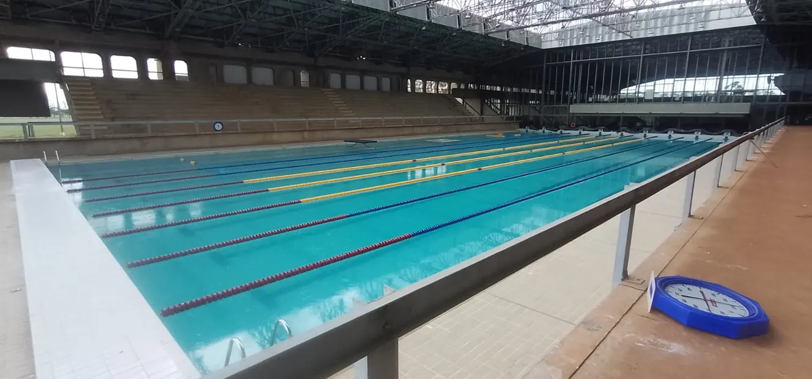

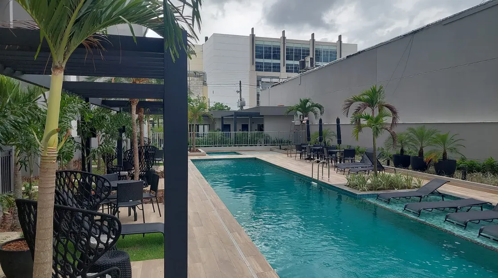
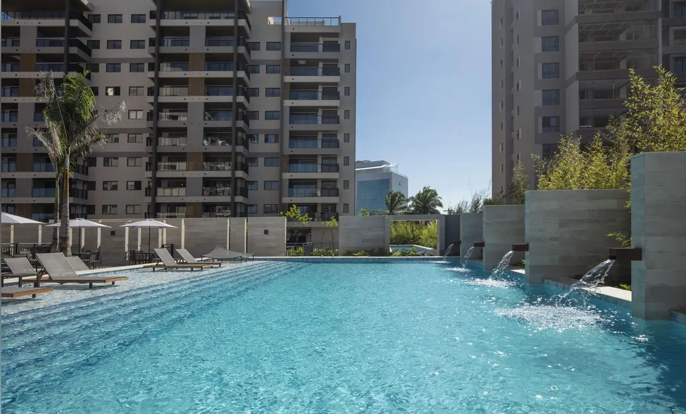
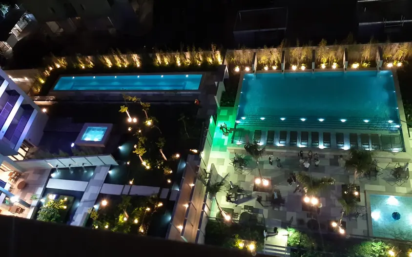

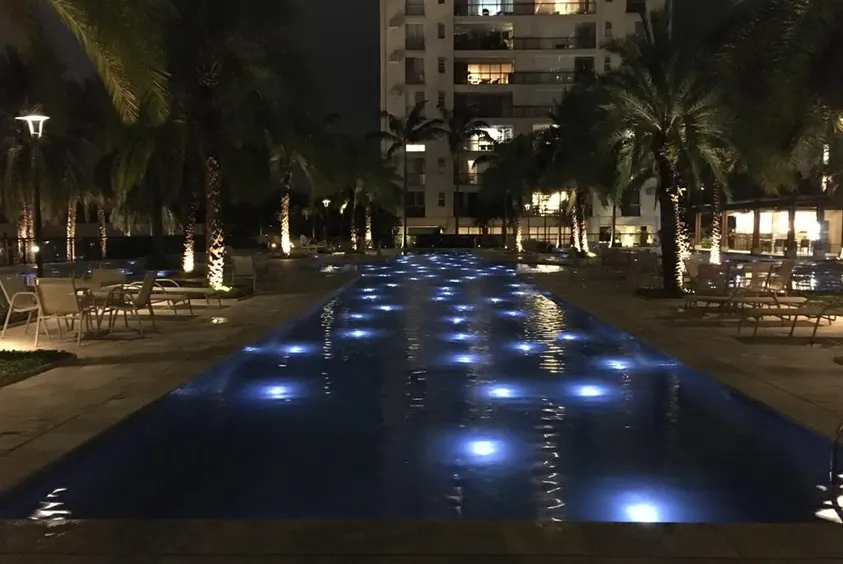
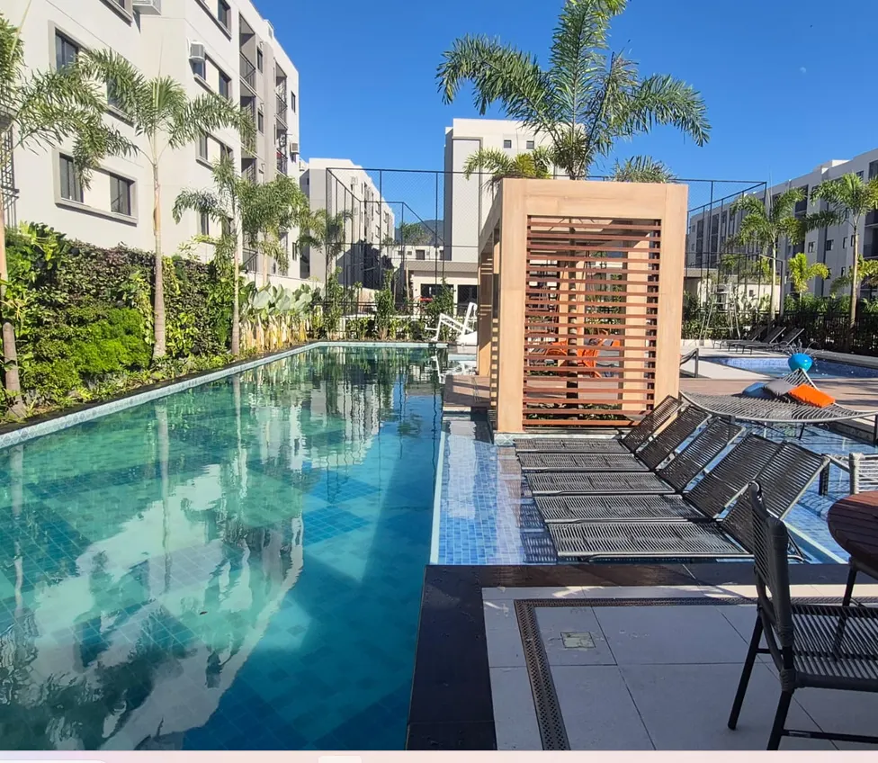

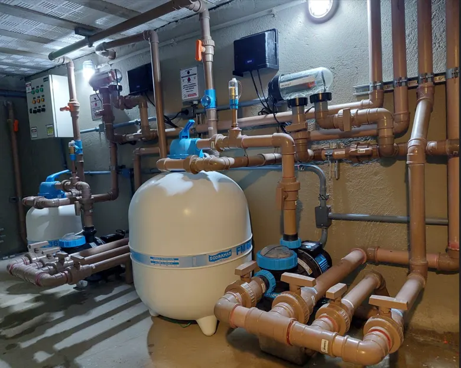
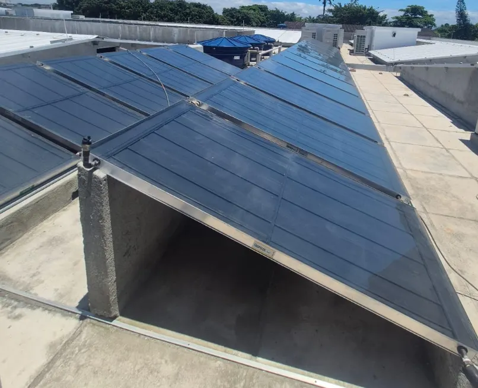
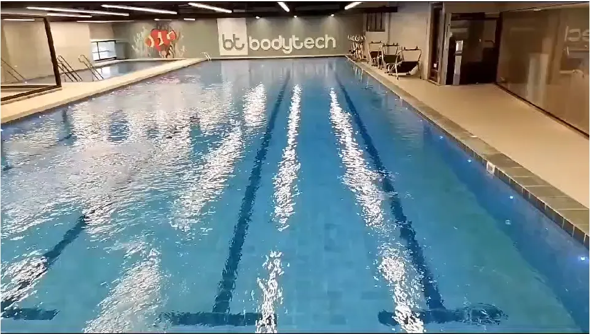

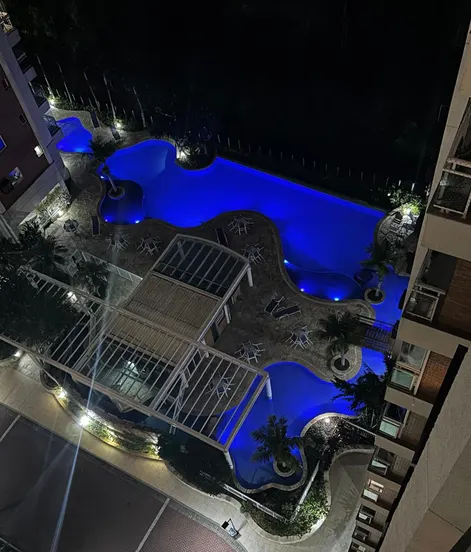
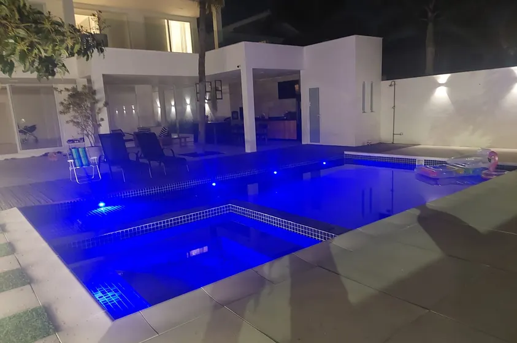
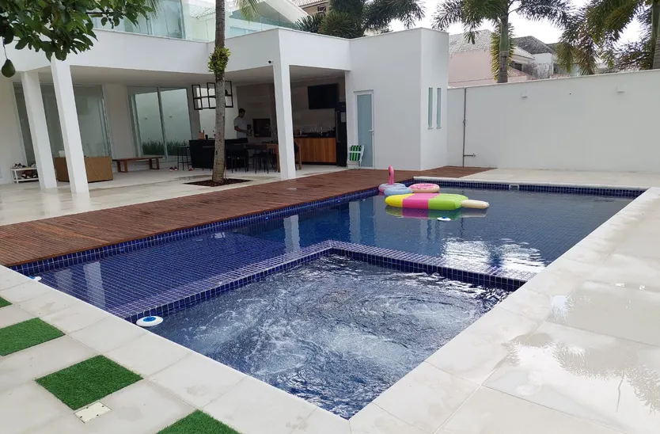
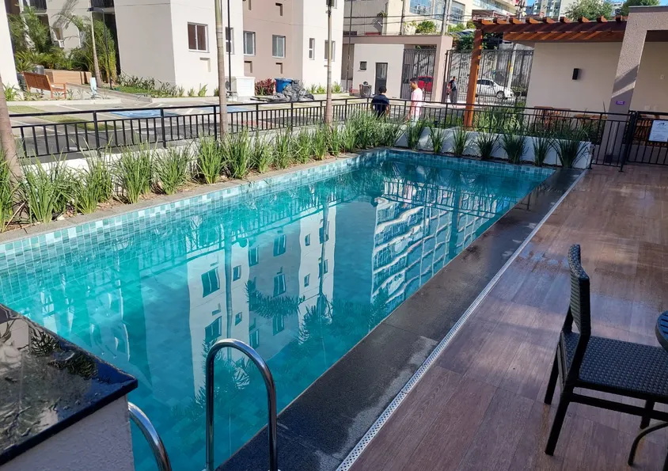
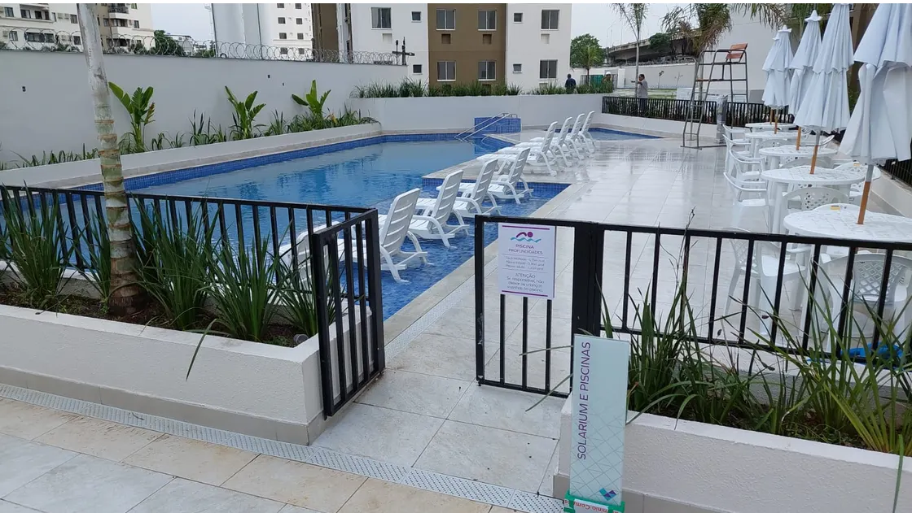
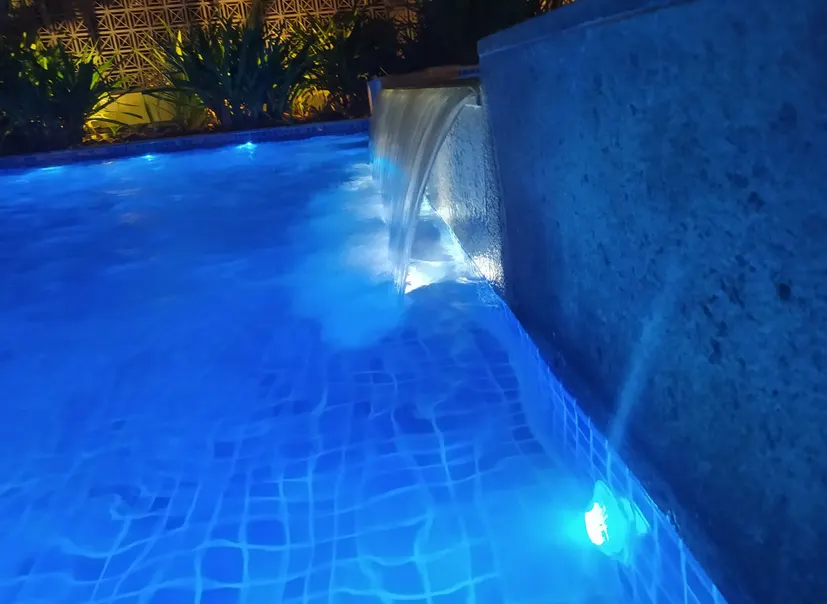
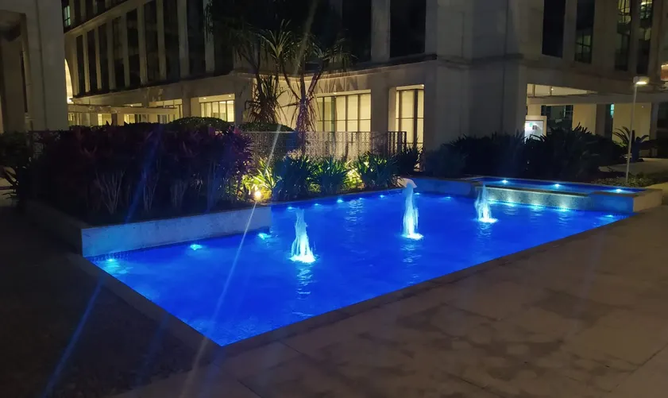
As identificações acompanham o documento de imagens enviado. O registro fotográfico não indica, por si só, o estágio atual de execução de cada obra.
Vamos conversar?